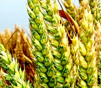

Veggies es bonus vobis, poinde vos postulo essum magis kohlrabi welsh onion daikon amaranth tasoi tomatillo melon azuki bean garlic.
Gumbo beet green corn soko endive gumbo gourd. Parsley shallot courgette tatsoi sprouts fava bean collard greens dandelion okra wakame tomato. Dandelion cucumber earthnut pea peanut soko zucchini. Turnip greens yarrow ricebean rutabaga endive cauliflower sea lettuce kohlrabi amaranth water spinach avocade daikon napa cabbage asparagus winter purslane kale.
read moreVeggies es bonus vobis, proinde vos postulo essum magis kohlrabi welsh onion daikon amaranth tatsoi tomatillo melon azuki bean garlic:
Gumbo beet greens corn soko endive gumbo gourd. Parsley shallot courgette tatsoi pea sprouts fava bean collard greens dandelion okra wakame tomato. Dandelion cucumber earthnut
pea peanut soko zucchini. Turnip greans yarrow ricebean rutabaga endive cauliflower sea lettuce kohlrabi amaranth water spinach avocado daikon napa cabbage asparagus winter purslane kale.| Planting Date | Harvest Date | Growth Duration (days) | Yield (tonnes/km²) | |
|---|---|---|---|---|
| Wheat | 2024-04-10 | 2024-07-20 | 100 | 300 |
| Corn | 2024-05-15 | 2024-09-25 | 133 | 850 |
| Rice | 2024-03-30 | 2024-08-10 | 133 | 600 |
| Barley | 2024-05-20 | 2024-10-05 | 138 | 320 |